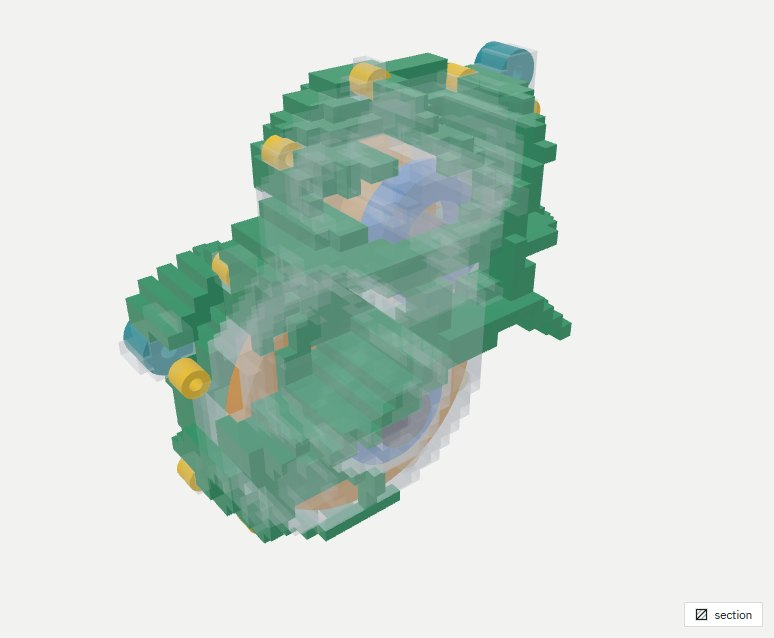
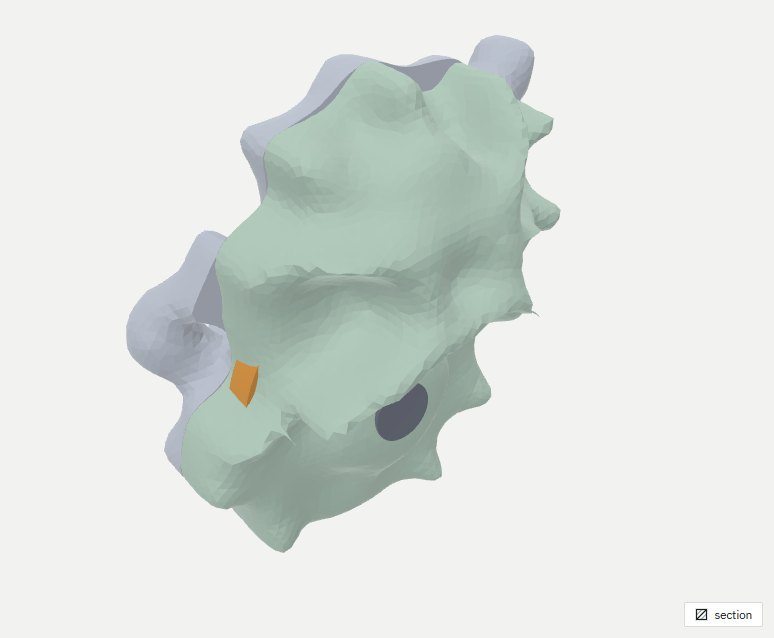
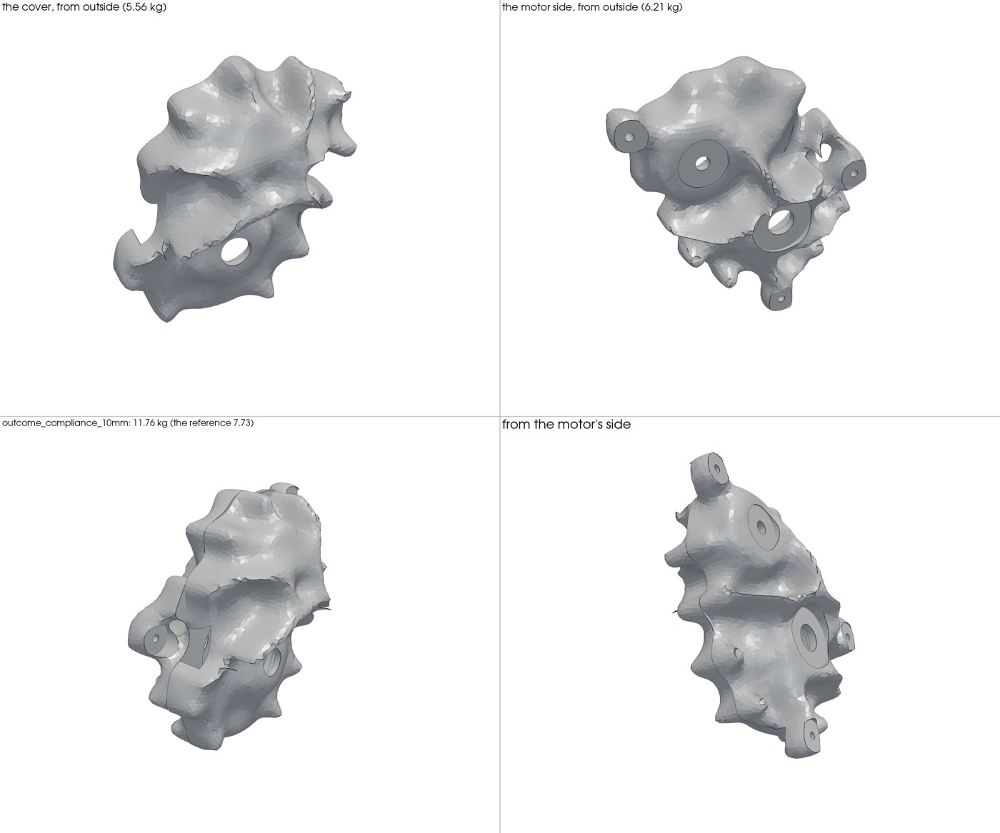
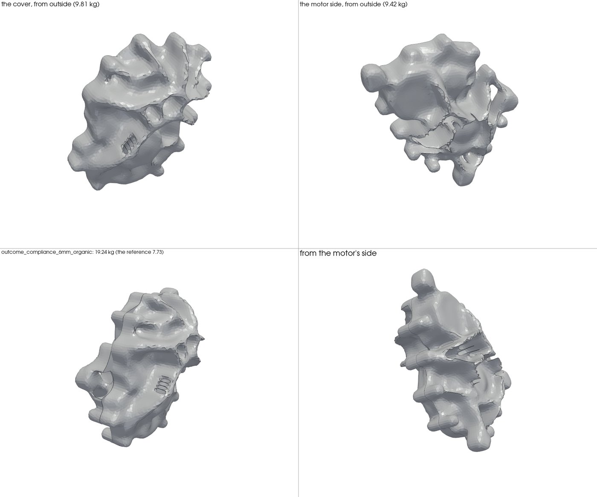
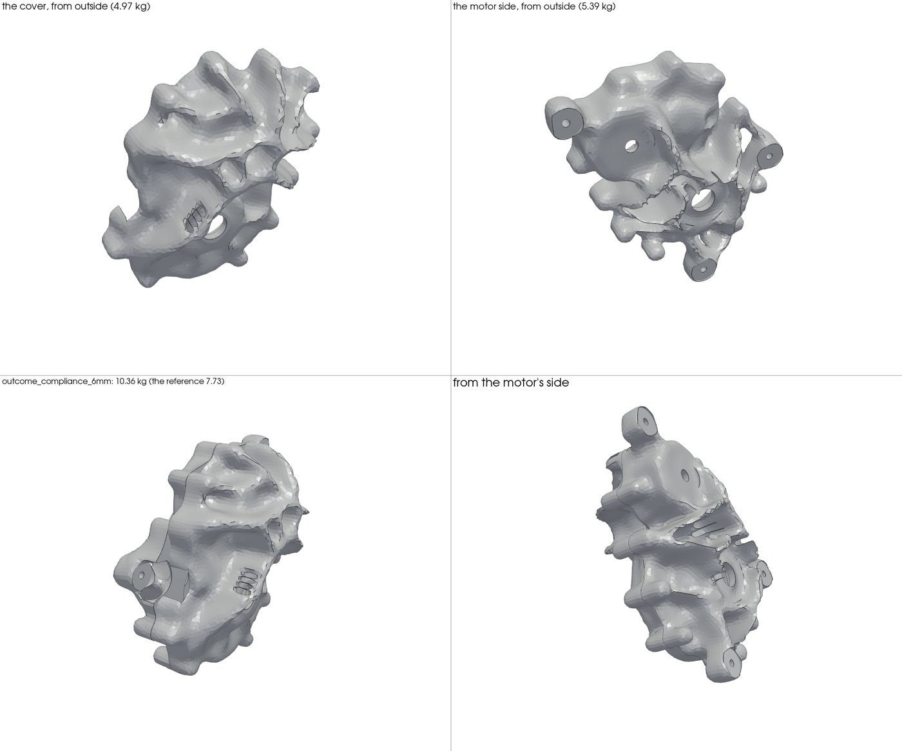
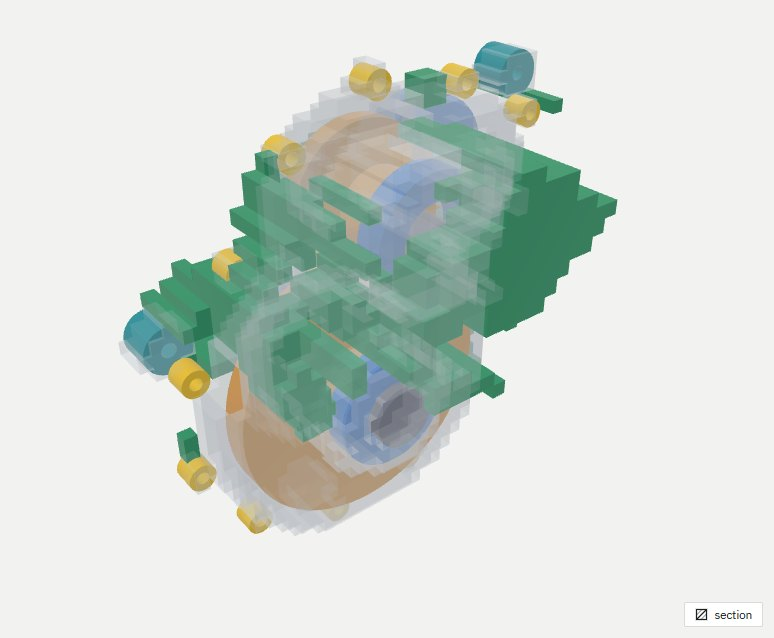

How published housing designs turn a topology result into a believable housing, how ours does it today, step by step, what we got, and what we are missing.
The short answer
We go straight from the field to a surface. They put a designer's reading in between.
In the published designs the optimiser shows bars, like bones, from each bearing to the feet. A designer then builds the housing from those bars: a thin, smooth skin, with the bars laid on it as ribs, and windows where nothing is needed.
Our set-up starts from a closed 4 mm box and fills every strut down to the split, so bars hardly appear. Then our drawing smooths the whole field into one surface. The result is stiff (its bearing beds move half as much as the reference housing's), but it comes out as one thick, lumpy body that does not look like a housing. Finer voxels did not change that.
What the two pictures show
Their approach, step by step
Picture 1: SEW's six steps
An industrial gearbox housing, from optimisation to final design.
1. Initial shape: the optimiser's result, organic struts and webs between the bearing bores and the feet.
2. Outer surface limit: a designer draws a smooth outer skin round the struts.
3. Plane cut: the skin is cut flat where it must be flat.
4. Surface offset: the skin is offset inwards to a thin, even wall.
5. New surface: a new skin is wrapped over the strut network, so the struts now show as ribs.
6. Final design: a fair skin, ribs that follow the load paths, windows where no metal is needed, flat machined flanges, clean feet.
Picture 2: a mass-percentage study
The same housing optimised again and again, each time with a different share of the space's mass, from 5 % up to 40 %.
At 5-10 %: a few bars, a truss from the bearing housings to the feet. The load paths are plain to see.
In between: the bars thicken and branch.
At 30-40 %: they merge into a webbed shell with holes, close to a housing.
Nothing is forced to be a closed box. Only the interfaces are kept.
Keep only the interfaces.The bearing housings, the flanges and the feet. The rest of the space is free.
Let the optimiser show the load paths.Little metal gives bars; more metal gives a webbed shell. A sweep of mass budgets shows how the paths grow.
Read the result like a designer.Draw an outer limit surface, cut it flat where needed, offset it to a thin wall, wrap it over the bars so they become ribs, and open windows.
Finish it.Fair surfaces, an even wall, one fillet size, flat faces where things bolt on. That is why it looks real, even where it might not be easy to cast.
What we do
Our approach today, step by step
The contract.Your gear train, its bearings, the three mounts and the two-part sand casting, split across the shafts. No motor flange: the vehicle holds the motor. The optimiser sees one load case, peak drive. The judge at the end checks peak drive and peak reverse.
What the optimiser is given.The inside is kept as air: the room round every gear, shaft and bearing, run out to the split, so that each half is a cup. A 4 mm skin of metal is frozen all round it. The mounts and the bolt bosses are frozen metal too. Everything else in the packaging space is free.
The mould rule.Each stick of voxels along the shafts is filled from the split out to its last metal, so the shape can come out of a two-part mould. A strut in mid-air becomes a solid curtain down to the split.
The optimiser.Make the housing as stiff as it can be under the bearing forces, with the mounts held (least compliance), using 7.73 kg of metal in all, the reference housing's mass. Robust: it must also work when every member is a little thinner or a little thicker, so it cannot lean on half-filled voxels. One run raises the sharpness until every voxel is metal or air. 10 mm: 2 min6 mm: 15 min
The organic shape.The inside is filled for now and the interfaces made solid. Then the whole lot is blurred lightly, its surface traced (marching cubes), smoothed, re-meshed into even triangles and sewn into a solid. The whole field at once.under 1 min
The CAD.The exact interfaces are cut into that solid: the inside, the bearing bores, the seals, the mount and bolt holes. A bolt is kept only where the body holds its boss. 3-4 min
The judge.Castability (the mould's pull, the least wall), then FE on a TET10 mesh of the CAD, then the grade: bearing tilt, how far the bearing beds move, the first modes against the gear-mesh frequencies, and mass. FE 1-2 min
End to end, from the optimiser's start to a graded CAD: 15 minutes at 10 mm, 23 minutes at 6 mm, with nothing done by hand.

The field (10 mm, compliance). Metal wraps the whole inside as one thick envelope. No separate bars.

The organic shape. The whole field smoothed into one body. Skin and ribs are never told apart.

The CAD (11.76 kg). Exact interfaces in a lumpy body, with ragged edges along the split's seams.
What we got
The numbers so far
Field check: the optimiser's own model with every voxel metal or air, in peak drive: the worst bearing tilt, and the metal it placed beyond the frozen skin, mounts and bosses (every run had the same 7.73 kg in all).
The other columns are FE and the grade on the drawn CAD. Beds: how far the bearing seats move. Tilt: against its pass line, where 1 × is three quarters of the tilt the bearing type allows (a 25 % margin for the model) and under 1 passes. Undercut: the share of each half's surface (motor side / cover) that the two-part mould cannot release.
Design
Optimiser
Field check (drive)
Beds, drive / reverse
Tilt, drive / reverse
First mode
Mass
Undercut
10 mm, tilt as the goal (p-norm)
122 s
3.09 × · 3.50 kg
not drawn: in the optimiser's own model its bearings move 2.4-5.4 mm
10 mm, stiffness as the goal (compliance)
131 s
1.38 × · 4.85 kg
24 / 51 µm
0.73 / 1.42
828 Hz, clear
11.79 kg
1.5 / 1.6 %
6 mm, stiffness as the goal (compliance)
888 s
1.06 × · 5.29 kg
23 / 55 µm
0.89 / 1.51
764 Hz, 2 clashes
10.39 kg
7.3 / 6.2 %
The reference housing
-
-
52 / 138 µm
-
-
7.73 kg
-
Stiffness fixed the support
Both compliance designs are held by all three mounts. In peak drive their bearing beds move half as much as the reference housing's, and both pass the bearing tilt: the case they were optimised for.
Both fail the tilt in peak reverse only, at the same bearing (the intermediate shaft's, cover side). The optimiser never saw that case.
6 mm: a clean test of the voxel size
Only the voxel changed. The optimiser's own check improved: tilt 1.06 × against 1.38 ×, compliance 716 against 915 N·mm.
Drawn and judged, it is much the same housing: 1.4 kg lighter, the same bearing-bed movement, a lower first mode (764 Hz) that now meets two gear-mesh frequencies, and four to five times the undercut. It looks the same: one lump.

The 6 mm organic shape. Its 19.24 kg includes the inside, which stays filled until the CAD cuts it out. The ragged blades on the motor side are already here, so they come from the field and the smoothing, not from the cuts.

The 6 mm CAD (10.36 kg), from the same cameras. The organic shape with its bores, holes and inside cut. The same envelope as at 10 mm.

Why we switched to stiffness. With bearing tilt as the goal, the core was tied to the mounts by a few thin struts (one mount by none) and swung 2-5 mm as a whole. The tilt, measured each bearing against its own shaft, could not see that.
A field is lighter than its CAD
In peak drive the CADs tilt less than their fields said (0.73 against 1.38, and 0.89 against 1.06), because the drawing adds 2.7 to 4 kg of metal beyond the budget. So the CAD is not yet a faithful copy of the field, in mass or in stiffness.
The gap
What we are missing
Step
Theirs
Ours
What we are missing
The load paths
Bars and webs between the interfaces; the flow is readable
One thick envelope round the inside
A run that lets bars show: less metal, no mould rule while exploring, and possibly no frozen full skin (only the interfaces kept)
The reading
A designer turns bars into ribs on a skin
The whole field smoothed at once
A reading step: find the bars (centre lines and thickness), build them as smooth ribs, make the skin a thin even wall round the inside, join them smoothly, open windows
The finish
Fair surfaces, an even wall, flat machined faces
Faceted lumps, ragged blades, knife edges at the split
Clean geometry: smooth surfaces, an even wall, one fillet size, flat faces where things are bolted
The intent
An outer limit surface, regular rib patterns
None
Guidance: an outer limit, rib patterns and symmetry where the loads allow, set by you or the agent
Why ours come out as one lump
The frozen 4 mm skin already closes the box, so the optimiser thickens it instead of building bars.
The mould rule fills each stick from the split, so any strut becomes a curtain.
The drawing smooths everything together, so whatever bars there were melt into one body.
Not the voxel size: at 6 mm it is the same lump.
Next
What I propose
Peak reverse in the optimisation too.Both designs fail the tilt only in the case the optimiser never saw. Both cases share one stiffness matrix, so with one factorisation the second case costs only an extra solve. It changes the load cases, so it is your call.
A mass sweep that shows the bars.No mould rule while exploring, only the interfaces kept, budgets from about 10 to 40 %. A few minutes each at 10 mm, so a full sweep is affordable in the loop.
The reading step on the clearest result.Bars become smooth ribs, the skin becomes a thin wall round the inside, the two are joined with smooth blends, and windows open where the field is empty. Then the mould rule is checked on the result, not imposed on the field.
Then mass and castability.A drawing that keeps the optimiser's mass, and no blades or knife edges at the split.